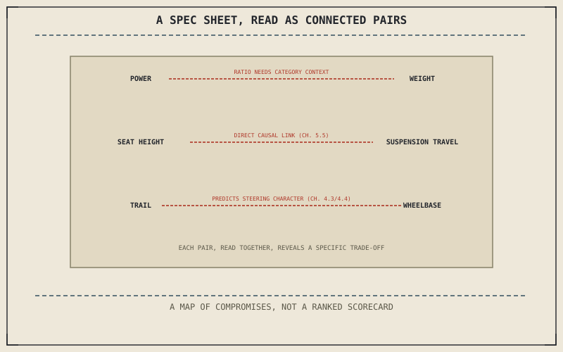

Chapter 16.1 made the argument in the abstract: every choice this book has covered is a trade, not a flaw. This chapter turns that argument into a literal reading skill — treating each number on a spec sheet as one half of a trade-off whose other half a reader can now supply automatically, using nothing more than what this book has already explained.
Chapter 16.1 closed by pointing here: from the abstract argument to a practical tool. This chapter is that tool.
Power and Weight: Reading the Ratio, Not Either Number Alone
A horsepower figure or a weight figure alone says very little on its own; the ratio between them, and what a manufacturer actually tuned that ratio for, says considerably more. Chapter 14.2's sportbike and Chapter 14.6's dirt bike can carry a genuinely similar power-to-weight ratio while solving completely different problems with it — one chasing top-end cornering speed, the other chasing off-road acceleration out of a rut — which means the ratio alone still needs Part XIV's category context to say anything meaningful about what it was actually built to do.
Seat Height and Suspension Travel: Reading One as the Cost of the Other
Chapter 5.5 already established seat height as a direct, causal consequence of suspension travel, not two independent numbers a manufacturer happens to publish side by side. A spec sheet lists them separately, but Chapter 15.2's fit check already assumed a reader understands they're connected — a taller seat height on a given model is very often the direct cost of the generous travel Chapter 14.5's adventure bike needs, not an unrelated design choice made in isolation.
Every pair of numbers on a spec sheet — power and weight, seat height and suspension travel, trail and wheelbase — is connected the same way this entire book has shown components connecting: read together, they reveal exactly which problem a design solved. Read separately, each number says almost nothing on its own.

A diagram of a spec sheet with three number pairs connected by lines — power and weight, seat height and suspension travel, trail and wheelbase — each pair revealing a specific engineering trade-off when read together rather than in isolation.
Trail and Wheelbase: Reading Steering Character Before Ever Riding It
Chapter 4.3 and Chapter 4.4 together explained trail's effect on steering urgency and self-centering stability in enough depth that a published trail figure can be read directly, without ever swinging a leg over the bike — a short trail predicting Chapter 14.2's sharp, urgent turn-in, a long one predicting Chapter 14.3's easy, hands-off stability. This is the most literal payoff of everything Chapter 4.1 through Chapter 4.4 built: a single published number, read correctly, predicting how a specific motorcycle will actually behave.
A Common Misconception, Cleared Up Early
It's a common habit to read a spec sheet as a ranked scorecard, checking which number is biggest across a list of candidates being cross-shopped. This chapter has shown a spec sheet's more useful job instead: read correctly, it doesn't rank motorcycles against each other at all — it shows exactly which specific problem a given design was actually built to solve, the same argument Chapter 14.9 and Chapter 16.1 already made, now applied as a literal, practical reading technique rather than an abstract principle.
Where This Leads
Chapter 16.3 closes this book by returning to the very first question it asked, and answering it with everything the 150 chapters in between have actually built.
Key Concepts to Remember
- Power-to-weight ratio needs Part XIV's category context to say anything meaningful about what it was actually tuned for.
- Seat height and suspension travel are causally connected, not two independent numbers, and reading them together reveals the actual trade being made.
- A spec sheet's real job is showing which specific problem a design solved, not ranking candidates on a single scorecard axis.
Cross-References
| ← Ch. 5.5 | Established seat height as a direct consequence of suspension travel; this chapter treats reading them together as revealing the actual trade a spec sheet makes. |
| ← Ch. 4.4 | Established trail's self-centering stability effect; this chapter treats a published trail figure as directly predicting a motorcycle's steering character. |
| ← Ch. 14.9 | Established that a category answers a specific problem rather than ranking against others; this chapter applies that same reading to individual spec sheet numbers. |
| → Ch. 16.3 | Closes the entire book, returning to its opening question. |